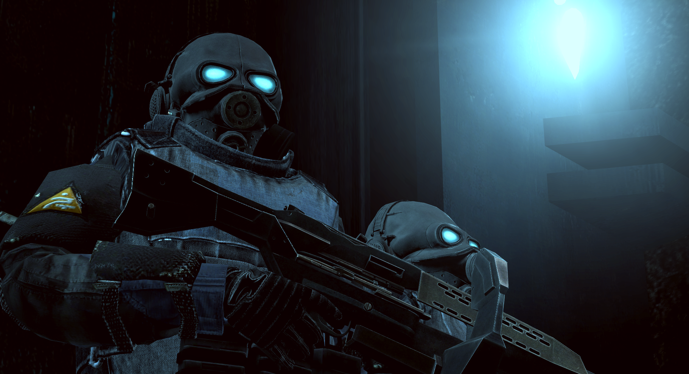

Forças Transumanas
As Forças Transumanas são as forças militares humanas dos Combine. Raramente vistas, mas prontas para se mobilizar a qualquer momento, essas forças de elite de soldados modificados existem para suprimir ameaças à estabilidade regional com eficiência calculada e brutal.
Regras
Salvo indicação em contrário, todas as regras e procedimentos da Proteção Civil se aplicam às Forças Transumanas. Quebrar qualquer uma dessas regras pode resultar em um potencial banimento e blacklist para ambas as whitelists.
0. Use o bom senso. O abuso claro da whitelist ou brincadeiras de qualquer tipo resultará em um banimento permanente.
1. Você é um ativo militar modificado, mais soldado do que humano, cuja única existência é para a preservação do status quo dos Combine. Suas ações, palavras e maneirismos devem refletir isso, ou você será removido.
2. Não há disciplina interna para soldados transumanos. Se você cometer um erro, será removido da facção. Da mesma forma, se você não concordar com o que seu líder de equipe está dizendo, mantenha isso para si.
3. Não interfira nos assuntos da Proteção Civil, a menos que esteja cumprindo uma ordem da Dispatch ou do comando local da Overwatch.
Comportamento
| Forças Overwatch |
| Forças Transumanas |
|  |
| Uma força militar ciberneticamente aprimorada e cognitivamente substituída, implantada para preservar a integridade urbana quando todas as outras opções falharam. |
Esta facção é reservada para aqueles que podem manter uma presença séria e intimidadora quando estão à vista do público; lembre-se de que as Forças Transumanas é a força terrestre Overwatch mais organizada e disciplinada.
Os soldados transumanos utilizam terminologia verbal nas comunicações por rádio, em vez de códigos 10. Siga seus padrões de fala conforme apresentados no universo de Half-Life 2, especialmente ao interagir com os cidadãos, onde usar palavras mínimas e manter as ordens clínicas e sucintas ajuda a distanciar os soldados da força de trabalho. Muitas vezes, menos palavras têm maior impacto.
Implantação
Os soldados transumanos são muito mais imponentes quando existem como uma força raramente vista até que a situação se torne desesperadora. Como tal, há diretrizes muito rígidas sobre quando os jogadores podem 'ativar' seus personagens transumanos.
Soldados podem realizar uma amputação imediata sumária sobre violadores em ATIVIDADE ANTICÍVICA NÍVEL CINCO ou maior durante esses momentos, desde que não contradiga as regras da facção.
Qualquer implantação deve ser feita em um grupo de pelo menos 2 unidades transumanas e alinhada com as diretrizes listadas abaixo. Além disso, as unidades ativadas não devem exceder os máximos da tabela (à direita) em nenhum momento.
Ativos Prioritários
Os membros do Conselho de Segurança da Cidade 11 devem, ocasionalmente, dialogar com a população em geral. Como soldados transumanos, faz parte do seu dever preservar sua posição durante essas excursões, o que inclui:
- Estar constantemente armados e prontos para defender ou se colocar na linha de fogo do ativo prioritário.
- Em situações onde o ativo prioritário está em risco indevido, é perfeitamente apropriado desconsiderar comandos que possam colocar em perigo sua segurança em favor de movê-lo para um local seguro.
- Permanecer vigilantes e planejar rotas de saída potenciais ou fontes de ataque.
- Manter membros da força de trabalho suprimidos ou afastados do ativo.
- Cidadãos que não cumprirem um comando para se afastar devem ser expurgados da força de trabalho.
Como ativo militar Combine, você não está obrigado a cumprir qualquer ordem em nome do ativo, além de garantir sua segurança e executar as diretivas da Overwatch provenientes de uma fonte de administração de setor ou Dispatch.
| Índice de Politi-Estabilização | Máximo de soldados |
| PRESERVADO | 2 |
| MARGINAL | 2 |
| FRATURADO | 4 |
| ISENÇÃO DE JULGAMENTO | N/A |
Estabilização
Soldados transumanos podem ser implantados para estabilizar uma insurreição local em todo o distrito quando o Índice de Politi-Estabilização estiver FRATURADO ou em um nível mais severo.
Isso pode envolver uma busca sistemática e inoculação do Sistema Pluvial somente em ISENÇÃO DE JULGAMENTO.
Controles Importantes
F1: Abre o menu de interação.
F2: Abre o PDA.
/tac
/ow
/ep
/codigo1: Implanta um ponto de referência geral.
/codigo2: Implanta um ponto de código 2.
/codigo3: Implanta um ponto de referência de código 3.
/pk
/chutarporta: Chuta a porta para abri-la.
/golpear: Nocauteia o personagem que você está olhando com a coronha de sua arma.